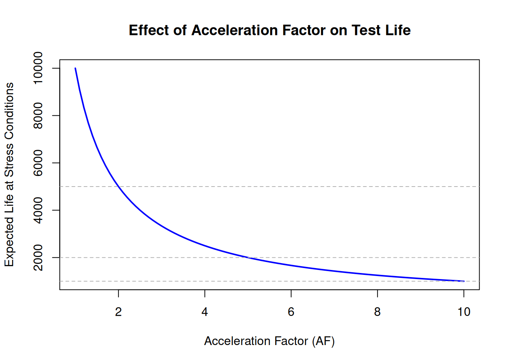
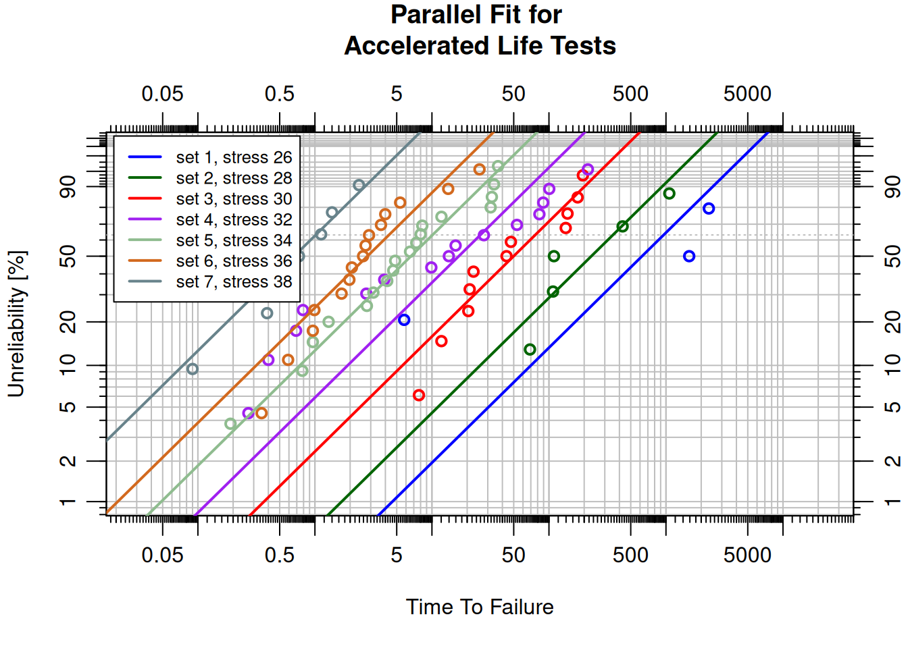
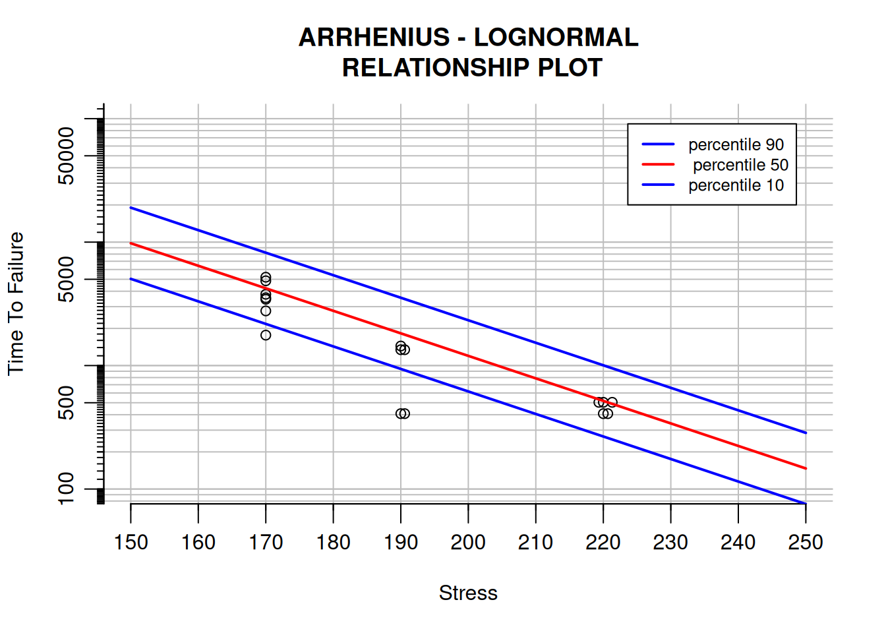
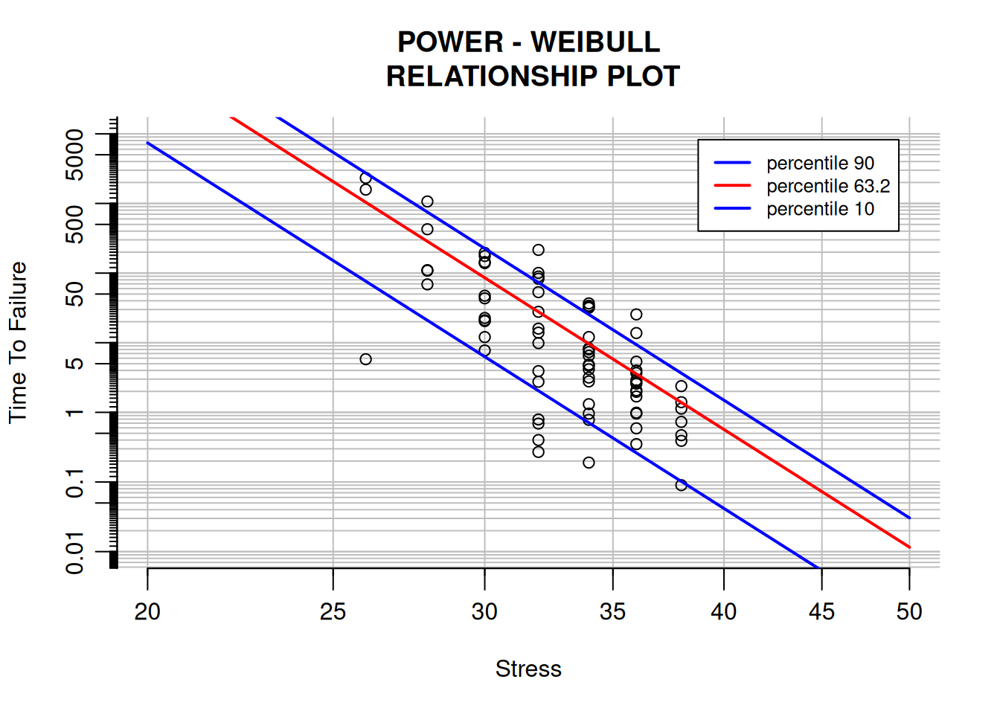

library(WeibullR.ALT)5 Accelerated Life Testing
5.1 Introduction
Accelerated Life Testing (ALT) (Meeker and Escobar 1998; Nelson 1990) subjects products to elevated stress levels — temperature, voltage, mechanical load, humidity — to induce failures more quickly than would occur under normal operating conditions. The acceleration relationship is then used to translate accelerated-test results into normal-use life predictions.
This approach is essential when products are designed for long service lives (years or decades), making it impractical to wait for failures at use conditions. ALT compresses that time by running tests at higher stress, then mathematically projecting back to the use environment.
5.2 Learning Objectives
By the end of this chapter, you will be able to:
- Explain the purpose of accelerated life testing and the role of the Acceleration Factor.
- Apply the Arrhenius model for temperature-accelerated tests.
- Apply the Power Law model for non-thermal stress acceleration.
- Fit ALT models using the
WeibullR.ALTpackage. - Interpret probability plots and relationship plots from ALT analyses.
- Use parallelization to constrain the shape parameter across stress levels.
5.3 The Acceleration Factor
The Acceleration Factor (AF) quantifies how much faster a product fails under elevated stress compared to use conditions:
\[\text{Life at use conditions} = AF \times \text{Life at stress conditions}\]
The impact of AF on expected test life:
AF_vals <- seq(1, 10, by = 0.1)
life_normal <- 10000 # assumed normal-use life
plot(AF_vals, life_normal / AF_vals, type = "l", col = "blue", lwd = 2,
xlab = "Acceleration Factor (AF)",
ylab = "Expected Life at Stress Conditions",
main = "Effect of Acceleration Factor on Test Life")
abline(h = life_normal / c(2, 5, 10), col = "gray70", lty = 2)
An AF of 5 means the product fails five times faster under test stress — a 10,000-hour life in the field becomes a 2,000-hour test.
5.4 The Arrhenius Model
The Arrhenius Model describes the relationship between temperature and reaction rate, which maps directly to material degradation and failure:
\[AF = \exp\left(\frac{E_a}{k}\left(\frac{1}{T_{\text{use}}} - \frac{1}{T_{\text{stress}}}\right)\right)\]
Where: - \(E_a\) = activation energy in eV (electron volts) - \(k\) = Boltzmann constant (\(8.617 \times 10^{-5}\) eV/K) - \(T_{\text{use}}\), \(T_{\text{stress}}\) = temperatures in Kelvin
Higher activation energies mean the failure mechanism is more sensitive to temperature.
WeibullR.ALT: Arrhenius-Lognormal Example
The WeibullR.ALT package (Silkworth 2022) extends WeibullR with ALT models. Data: Class B insulation tested at three oven temperatures (170, 190, 220°C), from Nelson (1990) Table 4.1.
t41 <- NelsonData("table4.1")
set170 <- alt.data(t41$C170f, s = t41$C170s, stress = 170)
set190 <- alt.data(t41$C190f, s = t41$C190s, stress = 190)
set220 <- alt.data(t41$C220f, s = t41$C220s, stress = 220)
arrobj <- alt.make(list(set170, set190, set220),
dist = "lognormal", alt.model = "arrhenius",
method.fit = "mle", view_dist_fits = FALSE)The fitted curves shift left as temperature increases — higher temperature leads to shorter life.
Calculating the AF at 220°C vs 170°C with \(E_a = 1.0\) eV:
E_a <- 1.0
k <- 8.617e-5
T_use <- 170 + 273 # 443 K
T_stress <- 220 + 273 # 493 K
AF <- exp(E_a / k * (1 / T_use - 1 / T_stress))
cat("Acceleration Factor at 220°C vs 170°C:", round(AF, 1), "\n")Acceleration Factor at 220°C vs 170°C: 14.3 At 220°C the insulation degrades several times faster than at 170°C.
NoteTry It
A component is tested at 85°C to accelerate failures. The use temperature is 25°C. The activation energy is 0.65 eV. Compute the AF.
E_a <- 0.65
k <- 8.617e-5
T_use <- 25 + 273.15
T_stress <- 85 + 273.15
# AF = exp((E_a / k) * (1/T_use - 1/T_stress))Solution
E_a <- 0.65
k <- 8.617e-5
T_use <- 25 + 273.15
T_stress <- 85 + 273.15
AF <- exp((E_a / k) * (1 / T_use - 1 / T_stress))
cat("Acceleration Factor:", round(AF, 1), "\n")Acceleration Factor: 69.3 5.5 The Power Law Model
The Power Law Model describes how a product’s life is affected by non-thermal stresses (voltage, mechanical load, pressure):
\[AF = \left(\frac{S_{\text{stress}}}{S_{\text{use}}}\right)^{n}\]
Where \(n\) is the stress exponent — the sensitivity of the failure mechanism to the applied stress.
WeibullR.ALT: Power Law Example
Data: electrical insulating fluids tested at 7 voltage levels (26–38 kV).
data_nelson <- NelsonData("table3.1")
data26 <- alt.data(data_nelson$kV26, stress = 26)
data28 <- alt.data(data_nelson$kV28, stress = 28)
data30 <- alt.data(data_nelson$kV30, stress = 30)
data32 <- alt.data(data_nelson$kV32, stress = 32)
data34 <- alt.data(data_nelson$kV34, stress = 34)
data36 <- alt.data(data_nelson$kV36, stress = 36)
data38 <- alt.data(data_nelson$kV38, stress = 38)
pwrobj <- alt.make(list(data26, data28, data30, data32, data34, data36, data38),
dist = "weibull", alt.model = "power")
Curves shift left as voltage increases — higher voltage stress leads to shorter life.
5.6 Multiple Stress Factors
The Eyring Model extends the Arrhenius approach to account for multiple stress factors (temperature, voltage, humidity):
\[\text{Life}(S) = A \cdot \exp\left(\frac{B}{S} + C \cdot S\right)\]
The WeibullR.ALT package supports the Eyring model via alt.make(..., alt.model = "eyring"). See the package documentation for examples.
5.7 Parallelization
Parallelization constrains the shape parameter (slope) to be equal across all stress levels, simplifying the analysis:
prlobj <- alt.parallel(arrobj)
expobj <- alt.parallel(pwrobj)
With parallel slopes, the relationship between stress and life can be characterized by a single line (the relationship plot).
5.8 Relationship Plots
The relationship plot shows how life changes as stress increases (log-linear, stress on x-axis, log-life on y-axis). The slope characterizes the sensitivity of life to stress:
- Negative slope: higher stress → shorter life (typical).
- Flat slope: stress has little effect.
- Positive slope: higher stress → longer life (rare).
lnrobj <- alt.fit(prlobj)
plot(lnrobj, suppress.dev.new = TRUE)
Each line corresponds to a different probability of failure (e.g., P10 = 10% failure probability, P63.2 = 63.2% failure probability = characteristic life).
lnrobj2 <- alt.fit(expobj)
plot(lnrobj2, suppress.dev.new = TRUE)
Both relationship plots confirm a negative slope — higher stress leads to shorter life in both datasets.
TipReview
What does a negative slope in a relationship plot indicate?
Answer
Higher stress leads to shorter life. This is the typical finding in ALT — stress accelerates the failure mechanism.5.9 Summary
Key takeaways:
- Acceleration Factor: \(\text{Life}_{\text{use}} = AF \times \text{Life}_{\text{stress}}\).
- Arrhenius: temperature-based acceleration; \(AF = \exp(E_a/k \cdot (1/T_{\text{use}} - 1/T_{\text{stress}}))\).
- Power Law: non-thermal stress acceleration; \(AF = (S_{\text{stress}}/S_{\text{use}})^n\).
- Parallelization: constrains slope to be equal across stress levels; required before fitting the relationship.
- Relationship plots: visualize life vs stress; negative slope = higher stress → shorter life.
- Use
alt.data()→alt.make()→alt.parallel()→alt.fit()for the full workflow.
Meeker, William Q., and Luis A. Escobar. 1998. Statistical Methods for Reliability Data. Wiley-Interscience.
Nelson, Wayne. 1990. Accelerated Testing. Wiley-Interscience.
Silkworth, David. 2022. WeibullR.ALT: Accelerated Life Testing Using ’WeibullR’. https://doi.org/10.32614/CRAN.package.WeibullR.ALT.